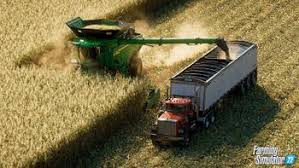

.jpg)
farming simulator
oque é???
Na carreira, o jogador é um agricultor. Ele tem que colher suas plantações e vender para aumentar a sua fazenda, comprar campos. O jogo é livre para fazer o que quiser. O jogador cresce e escolhe o que quer fazer, e então, pode usar seu dinheiro em campos adicionais e comprar máquinas, tratores e o caminhão.
Há missões (tarefas) no jogo, que são gerados temporariamente. O jogador realiza missões num período de tempo, como entregar plantações com melhor preço, encontrar objetos perdidos e cortar grama. Ao concluir as missões, o jogador ganha moedas e bônus.
O Modo Multiplayer foi estreado pela Giants no Farming Simulator 14, o primeiro dispositivo móvel a ter essa opção. Daí em diante, nas versões de PC e consoles, os jogadores podem se conectar simultâneamente até o limite dado pelo jogo, podendo variar de acordo com a versão. Nas dispositivos móveis, Os jogadores só conseguem se conectar pela mesma rede Wi-fi ou Bluetooth em proximidade.

Os jogadores podem adicionar Mods nos jogos de Farming Simulator, como máquinas e tratores adicionais, mapas e comandos. Só é possível nas versões de PC, e pode ser feito também por meio de DLCs que a Giants lança no ano seguinte do lançamento.
A agricultura, pecuária e silvicultura lhe oferecerão grande variedade de atividades em meio aos desafios apresentados pelas quatro estações, principalmente o inverno
A franquia Farming Simulator, desenvolvida pela Giants Software, vinha sendo mencionada em diversas conversas sobre uma nova versão da série. Para uma comunidade cada vez mais crítica, o lançamento será um momento oportuno para a implementação de várias dinâmicas no jogo

link do jogo: Farming Simulator 22 - Download